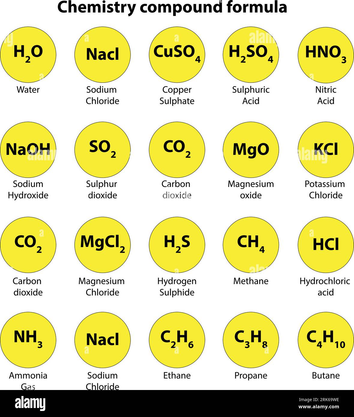

Atomic ratio
| Vietnamese | Tỉ lệ nguyên tử |
|---|---|
| English | Atomic ratio |
| Pronunciation | /əˈtɑːmɪk ˈreɪʃioʊ/ |
| Word type | noun (as labelled in the PDFs) |
Topic 3 — Meaning (Vietnamese)
tỷ lệ giữa số nguyên tử của các nguyên tố khác nhau trong một chất hoặc công thức hóa học
Meaning (English)
the ratio between the numbers of atoms of different elements in a substance or formula (tỷ lệ giữa số nguyên tử của các nguyên tố khác nhau trong một chất hoặc công thức hóa học)
Example
In ammonia, the atomic ratio of nitrogen to hydrogen is 1:3. (Trong ammonia, tỉ lệ nguyên tử nitrogen so với hydrogen là 1:3.)
Images from the PDFs


